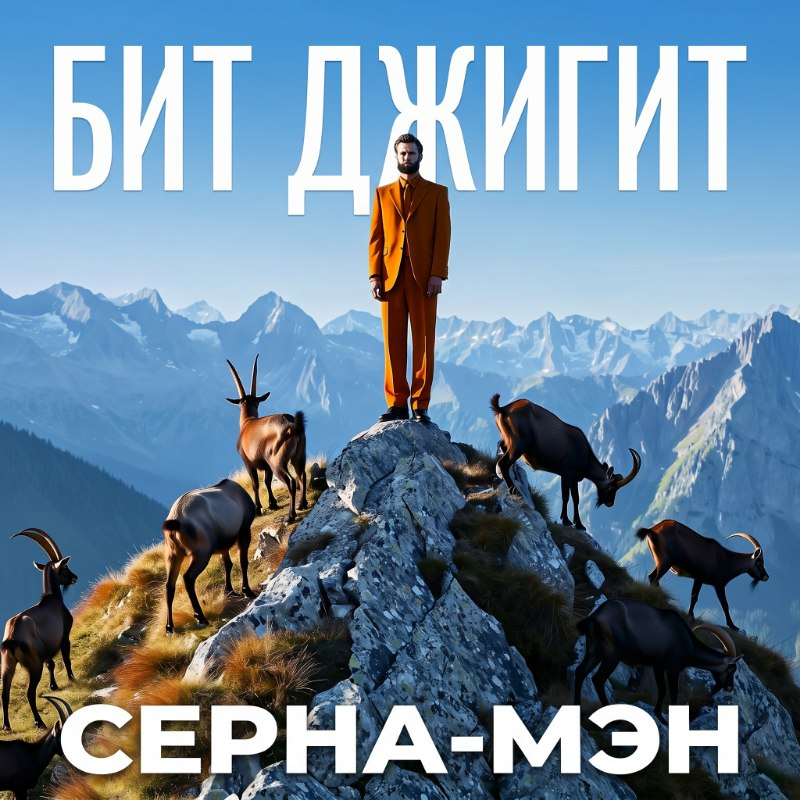
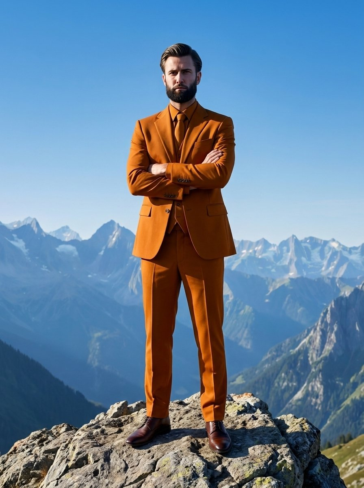

Серна-мэн
вышелВстречайте нового героя в горах Адыгеи — Серна-мэн. Узнайте, как он забирается на Оштен.
Майкоп · Адыгея · Кавказ
Песни про Адыгею и для Адыгеи. Горы, районы и живые персонажи в каждой строчке.
Треклист

Встречайте нового героя в горах Адыгеи — Серна-мэн. Узнайте, как он забирается на Оштен.
Трек в тонированные «Приоры» — чтобы стильно ехать по Пролетарской.
Танцевальный хит для вечеринок и клубов Адыгеи.
О проекте
«Бит Джигит» — не музейный экспонат, а живой источник образов: горная эпика, герои-пародии вроде Серна-мэна, юмор и величие рядом друг с другом — так же, как в самих сказаниях соседствуют подвиг и ирония.

Сотрудничество, дистрибуция, ИИ-продакшн — от нового трека до готового клипа и рилса. Опишите задачу в форме ниже: сюда доходит быстрее, чем через горы.